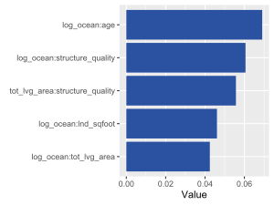
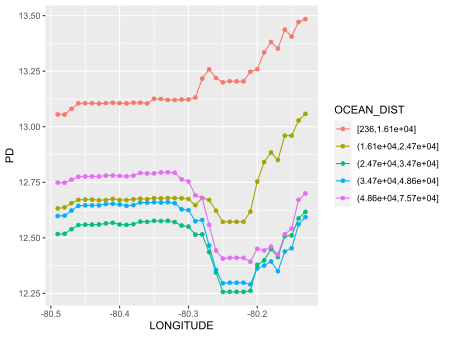
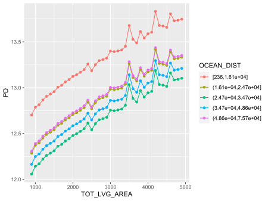

Overview
What makes a ML model black-box? It’s the interactions!
This package offers a fast, model-agnostic implementation of Friedman and Popescu’s statistics of interaction strength [2]. As such, it helps to unveil the darkness of the black-box.
The package
- supports multivariate predictions,
- respects case weights, and
- works with both data.frames and matrices (e.g., for XGBoost).
Furthermore, different variants of the original statistics in [2] are available.
Note: The {gbm} package offers a model-specific implementation of some of the statistics. Since it uses the weighted tree-traversal method of [1] to estimate partial dependence functions, the results are typically slightly different.
Usage
To demonstrate the typical workflow, we use a beautiful house price dataset with about 14,000 transactions from Miami-Dade County available in the {shapviz} package, and analyzed, e.g., in [3].
We are going to model logarithmic sales prices as a function of geographic features and other features like living area and building age. The model is fitted with XGBoost using interaction constraints to produce a model additive in all non-geographic features.
What can we say about interactions? Can we verify additivity in non-geographic features?
Fit model
library(interactML)
library(xgboost)
library(shapviz)
# Variable sets
x_geo <- c("LATITUDE", "LONGITUDE", "CNTR_DIST", "OCEAN_DIST", "RAIL_DIST", "HWY_DIST")
x_nongeo <- c("TOT_LVG_AREA", "LND_SQFOOT", "structure_quality", "age")
x <- c(x_geo, x_nongeo)
# Build interaction constraint vector
ic <- c(
list(which(x %in% x_geo) - 1),
as.list(which(x %in% x_nongeo) - 1)
)
# Train/valid split
set.seed(1)
ix <- sample(nrow(miami), 0.8 * nrow(miami))
y_train <- log(miami$SALE_PRC[ix])
y_valid <- log(miami$SALE_PRC[-ix])
X_train <- data.matrix(miami[ix, x])
X_valid <- data.matrix(miami[-ix, x])
dtrain <- xgb.DMatrix(X_train, label = y_train)
dvalid <- xgb.DMatrix(X_valid, label = y_valid)
# Fit
params <- list(
learning_rate = 0.2,
objective = "reg:squarederror",
max_depth = 5,
interaction_constraints = ic
)
fit <- xgb.train(
params = params,
data = dtrain,
watchlist = list(valid = dvalid),
early_stopping_rounds = 20,
nrounds = 1000,
callbacks = list(cb.print.evaluation(period = 100))
)Analyze interactions
To analyze interactions, we will
- call
interact()for the expensive crunching and - get statistics with
summary()and/orplot().
# 2-3 seconds on simple laptop - a random forest will take 1-2 minutes
set.seed(1)
system.time(
inter <- interact(fit, v = x, X = X_train)
)
summary(inter)
# Output
Proportion of prediction variability unexplained by main effects of v
0.09602024
Strongest overall interactions
[,1]
OCEAN_DIST 0.062639450
LONGITUDE 0.045194768
LATITUDE 0.029151873
CNTR_DIST 0.027695769
RAIL_DIST 0.003805603
HWY_DIST 0.003484982
TOT_LVG_AREA 0.000000000
LND_SQFOOT 0.000000000
structure_quality 0.000000000
age 0.000000000
Strongest relative pairwise interactions
(only for features with strong overall interactions)
[,1]
LONGITUDE:OCEAN_DIST 0.156475264
LONGITUDE:CNTR_DIST 0.122113602
LATITUDE:LONGITUDE 0.076213847
LATITUDE:OCEAN_DIST 0.061130256
CNTR_DIST:OCEAN_DIST 0.040675335
LATITUDE:RAIL_DIST 0.030786973
LATITUDE:CNTR_DIST 0.029474763
CNTR_DIST:RAIL_DIST 0.012886536
LONGITUDE:RAIL_DIST 0.008402545
OCEAN_DIST:RAIL_DIST 0.007081773
# If {ggplot2} is available, we can also plot the statistics
plot(inter)Interpretation
- About 10% of prediction variability is unexplained by the sum of all main effects.
- The strongest overall interactions are associated with “OCEAN_DIST” and “LONGITUDE”. For instance, we can say that about 6% of prediction variability can be attributed to all interactions of “OCEAN_DISTANCE”.
- About 15.6% of the joint effect variability of above two features comes from their pairwise interaction.
Remarks
- Pairwise statistics are calculated only for the features with strongest overall interactions.
- The statistics need to repeatedly calculate predictions on n2 rows. That is why {interactML} samples 300 rows by default. To get more robust results, increase this value at the price of slower run time.
- Pairwise Friedmans and Popescu’s Hjk2 measures interaction strength relative to the combined effect of the two features. This does not necessarily show which interactions are strongest. To do so, we can study unnormalized statistics:
Strongest pairwise interactions (values on the scale of the response log(price)):
H2_jk(inter, normalize = FALSE, squared = FALSE, top_m = 5)
[,1]
LONGITUDE:OCEAN_DIST 0.08279401
LATITUDE:OCEAN_DIST 0.04797644
LONGITUDE:CNTR_DIST 0.04796194
CNTR_DIST:OCEAN_DIST 0.04718950
LATITUDE:LONGITUDE 0.03807378
# Again, we can use plot() to visualize these values
# (stat = 2 focusses on pairwise stats)
plot(inter, stat = 2, normalize = FALSE, squared = FALSE, top_m = 5)
Interpretation: The strongest pairwise interaction remains the one between longitude and distance to the ocean.
Let’s check a stratified partial dependence plot to get an impression how the interaction looks like:
# "BY" can be a column name in X, or any vector of (possibly transformed) values
# Numeric features are quantile binned into groups of similar size
pd <- partial_dep(fit, v = "LONGITUDE", X = X_train, BY = "OCEAN_DIST")
plot(pd) # Requires {ggplot2}Interpretation: For short distance to the ocean groups, the LONGITUDE effect looks indeed quite different.

As a contrast, the following plots shows perfectly parallel lines (additivity in living area):
plot(partial_dep(fit, v = "TOT_LVG_AREA", X = X_train, BY = "OCEAN_DIST"))
Background
Partial dependence
Let F : Rp → R denote the prediction function that maps the p-dimensional feature vector x = (x1,…,xp) to its prediction. Furthermore, let Fs(xs) = Ex\s(F(xs,x\s)) be the partial dependence function of F on the feature subset xs, where s ⊆ {1, …, p}, as introduced in [1]. Here, the expectation runs over the joint marginal distribution of features x\s not in xs.
Given data, Fs(xs) can be estimated by the empirical partial dependence function
$$ \hat F_s(\boldsymbol x_s) = \frac{1}{n} \sum_{i = 1}^n F(\boldsymbol x_s, \boldsymbol x_{i \setminus s}), $$
where xi \ s, i = 1, …, n, are the observed values of x\s.
A partial dependence plot (PDP) plots the values of F̂s(xs) over a grid of evaluation points xs.
Overall interaction strength
In [2], Friedman and Popescu introduced different statistics to measure interaction strength. Closely following their notation, we will summarize the main ideas.
If there are no interactions involving xj, we can decompose the prediction function F into the sum of the partial dependence Fj on xj and the partial dependence F\j on all other features x\j, i.e.,
F(x) = Fj(xj) + F\j(x\j).
Correspondingly, Friedman and Popescu’s Hj2 statistic of overall interaction strength is given by
$$ H_{j}^2 = \frac{\frac{1}{n} \sum_{i = 1}^n\big[F(\boldsymbol x_i) - \hat F_j(x_{ij}) - \hat F_{\setminus j}(\boldsymbol x_{i\setminus k})\big]^2}{\frac{1}{n} \sum_{i = 1}^n\big[F(\boldsymbol x_i)\big]^2}. $$
Remarks
- Partial dependence functions (and F) are all centered to mean 0.
- Partial dependence functions (and F) are evaluated over the data distribution. This is different to partial dependence plots, where one uses a fixed grid.
- Weighted versions follow by replacing all arithmetic means by corresponding weighted means.
- Multivariate predictions can be treated in a component-wise manner.
- Hj2 = 0 means there are no interactions associated with xj. The higher the value, the more prediction variability comes from interactions with xj.
- Since the denominator is the same for all features, the values of the test statistics can be compared across features.
Pairwise interaction strength
Again following [2], if there are no interaction effects between features xj and xk, their two-dimensional partial dependence function Fjk can be written as the sum of the univariate partial dependencies, i.e.,
Fjk(xj,xk) = Fj(xj) + Fk(xk).
Correspondingly, Friedman and Popescu’s Hjk2 statistic of pairwise interaction strength is defined as
$$ H_{jk}^2 = \frac{A_{jk}}{B_{jk}}, $$
where
$$ A_{jk} = \frac{1}{n} \sum_{i = 1}^n\big[\hat F_{jk}(x_{ij}, x_{ik}) - \hat F_j(x_{ij}) - \hat F_k(x_{ik})\big]^2 $$
and
$$ B_{jk} = \frac{1}{n} \sum_{i = 1}^n\big[\hat F_{jk}(x_{ij}, x_{ik})\big]^2. $$
Remarks
- Remarks 1 to 4 of Hj2 also apply here.
- Hjk2 = 0 means there are no interaction effects between xj and xk. The larger the value, the more of the joint effect of the two features comes from the interaction.
- Since the denominator differs between variable pairs, unlike Hj, this test statistic is difficult to compare between variable pairs. If both main effects are very weak, a negligible interaction can get a high Hjk2.
Modification
To be better able to compare pairwise interaction strength across variable pairs, and to overcome the problem mentioned in the last remark, we suggest as alternative the unnormalized test statistic on the scale of the predictions, i.e., $\sqrt{A_{jk}}$.
Furthermore, we do pairwise calculations not for the most important features but rather for those features with strongest overall interactions.
Total interaction strength of all variables together
If the model is additive in all features (no interactions), then
$$ F(\boldsymbol x) = \sum_{j}^{p} F_j(x_j). $$
To measure the relative amount of variability unexplained by all main effects, we can therefore study the test statistic of total interaction strength
$$ H^2 = \frac{\frac{1}{n} \sum_{i = 1}^n \left[F(\boldsymbol x_i) - \sum_{j = 1}^p\hat F_j(x_{ij})\right]^2}{\frac{1}{n} \sum_{i = 1}^n\left[F(\boldsymbol x_i)\right]^2}. $$
A value of 0 would mean there are no interaction effects at all.
Workflow
Calculation of all Hj2 statistics requires O(n2p) predictions, while calculating of all pairwise Hjk requires O(n2p2 predictions. Therefore, we suggest to reduce the workflow in two important ways:
- Evaluate the statistics only on a subset of the data, e.g., on n′ = 300 observations.
- Calculate Hj2 for all features. Then, select a small number $m = O(\sqrt{p})$ of features with highest Hj2 and do pairwise calculations only on this subset.
This leads to a total number of O(n′2p) predictions.
References
- Friedman, Jerome H. “Greedy Function Approximation: A Gradient Boosting Machine.” Annals of Statistics 29, no. 5 (2001): 1189-1232.
- Friedman, Jerome H., and Bogdan E. Popescu. “Predictive Learning via Rule Ensembles.” The Annals of Applied Statistics 2, no. 3 (2008): 916-54.
- Mayer, Michael, Steven C. Bourassa, Martin Hoesli, and Donato Scognamiglio. “Machine Learning Applications to Land and Structure Valuation.” Journal of Risk and Financial Management 15, no. 5 (2022): 193.